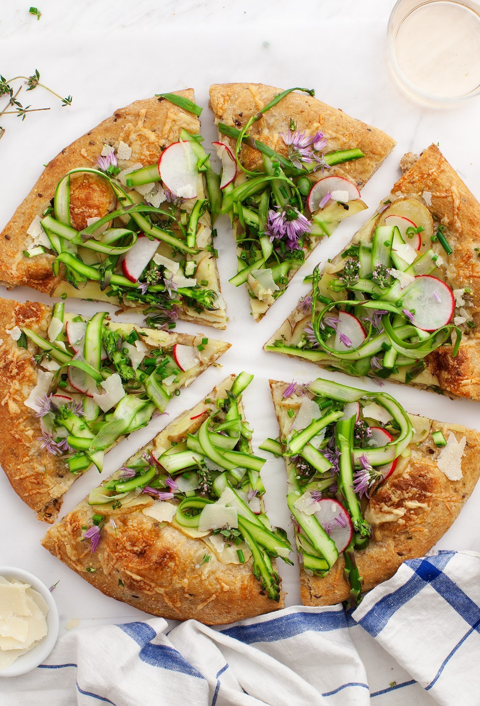

In medium mixer bowl, combine 2 cups flour, yeast, and salt; mix well.
Combine water and oil; heat to 120° to 130°F; add to flour mixture
Blend at low speed until moistened; beat 3 minutes at medium speed.
By hand, gradually stir in enough remaining flour to make a soft dough. (I used my KitchenAid dough hook attachment.)
Knead on floured surface 3 to 5 minutes.
Shape the dough into a ball, cover, and allow it to rest for 15 minutes.
Divide dough into 2 parts.
With well-floured or greased fingers, press each half into greased 12- or 14-inch pizza pan.
Sprinkle 1/4 cup of your favorite shredded cheese over dough to prevent a soggy crust. Spread prepared pizza sauce on each pizza (approximately 3/4 cup of sauce per pizza).
Add your favorite toppings—mushrooms, onions, olives, green peppers, pepperoni, cooked Italian sausage, anchovies, etc.
Cover with shredded cheese of your choice- Mozzarella, Parmesan and Asiago.
Bake at 400°F for 25 to 30 minutes until edge is crisp and light golden brown and cheeses are melted. Serve immediately 
Spread sauce on dough (pre-made or home made)
Sprinkle 1/4 cup or so of the cheese over the sauce, this will glue down the toppings
Place the Canadian bacon evenly on the pizza, then sprinkle with the bell peppers.
Use the rest of the cheese to evenly cover the pizza.
Cook at 350F until crust is golden brown and the cheese is melted and slightly brown on top.
Recipe designed for a 9x12" rectangular pizza and will yield 12 slices.
Number of Servings: 12
Sprinkle the yeast into a medium bowl with the warm water. We don’t mean hot, and we don’t mean cold… we mean warm! That’s the kind the yeast likes best. Stir until the yeast dissolves.
Place almost all of the flour on the table in the shape of a volcano. (Think Mt. Vesuvius… appropriate since Naples is the king of all pizza cities!).
Pour the yeast-and-warm-water mix, along with the other ingredients, into the “crater” of the volcano.
Knead everything together for 10 to 15 minutes until the dough is smooth and elastic, keeping your surface floured.
Grease up a bowl with some olive oil and put the dough inside. Turn the dough around so the top is slightly oiled.
Cover the bowl and put the dough aside to let it rest for at least four or five hours.
(optional for those who want their pizza really authentic). Make a cross on top of the dough with a knife. An old Italian tradition, this is seen as a way of “blessing the bread.”
Preheat the oven to about 400°F, or about 200°C.
Dump the dough out of the bowl and back onto the floured surface. Punch it down, getting rid of any bubbles. (Note: Now’s the time to enlist a kid with more energy than they know what to do with!).
Divide the dough in half and let it rest for a few minutes.
Roll each section into a 12-inch disc. Now’s your chance to decide how thick you want your pizza to be! Do you want it pizza alta (Neapolitan-style) or pizza bassa (Roman-style)? Just remember, your crust will puff up a little bit as it’s baked!
Transfer the dough onto an oiled pizza pan or baking sheet.
Add tomato sauce, if you want a pizza rossa (red pizza). Lots of pizzas in Italy are actually pizza bianca, without tomato sauce, so don’t feel like you have to! Brush the edges of the crust with a little bit of olive oil.
Bake each pizza for about 10 minutes, then add mozzarella cheese (sliced or grated) on top, as well as any other ingredients.
Let the pizzas bake until the crust is browned and the cheese is melted. By lifting up the pizza to peek underneath, you can make sure the bottom has browned, too.
Remove your pizzas from the oven and, for a real Italian touch, garnish with a few basil leaves. And enjoy!
John
Hancock High School
Exploring Computer Science Pilot Course, 3rd Block
Last Updated: May 2018
URL: username.github.io/repositoryname